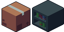
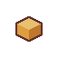
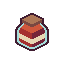

Obstacles are constantly trying to get in your way. As a sentient loaf of bread, you're capable of going up small obstacles. If the obstacle is too tall, dodge them by pressing (A) and (D). After moving, however, you move back one space. Move back too much and you'll lose!
Grabbing butter increases your score. The higher the score, the tastier you get!
A jar of jam will regularly spawn as you play. Picking them up will allow you to become slippery and move up a space. It also allows you to move through obstacles or get on top of them! You can only pick these up if you're moving forward, so make sure you're staying still.
